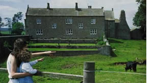
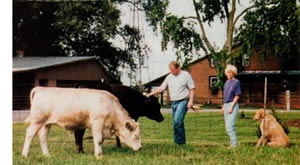
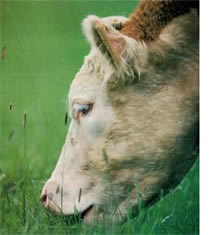
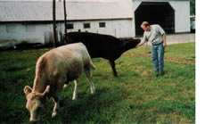
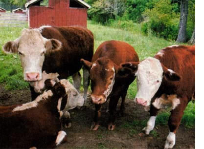

HOMESTEADING
You don't need a ranch to raise your own, healthy, pastured beef. Just a little patch of grass and some fencing will do the trick just fine.
In the tiny village of Vanlue, Ohio, Pat and Sheila Kinley operate Sunny Side Meats, a sort of mom-and-pop butchering business that serves small-scale farmers, gardeners and homesteaders who raise a calf, lamb or pig for their own meat. Although there's not much public hoopla about this kind of meat production, the number of people involved is surprisingly large and growing. Sunny Side is overwhelmed with work.
"We have to turn people away," says Pat, as if he barely believes it himself. Sunny Side, like thousands of similar shops, is regularly inspected and is as clean as any commercial meat processing plant. But its meat can't be sold commercially. Each package of meat must be stamped a "not for sale," a mysterious turn of the bureaucratic mind, which seems explainable only as a form of protection for big meat packers who don't like people providing for themselves.
Sunny Side butchers for people who raise their own meat, mostly pasture enthusiasts who avoid antibiotics and hormones. I understand the attraction. As a producer of homegrown meat raised on pasture grasses, I believe mine is healthier than the commercial stuff-and I know it tastes better. As Brad Billock, whose trailer I use to haul my beef to Sunny Side and who raises two steers every year says: "When we first raised our own meat, I could hardly believe how much better it tasted compared to what we were buying in the grocery stores."
And all you really need is a little grass.
On our 20-acre farm our focus is on the rotational grazing method, which is gaining interest now because of its cost, health and environmental benefits. (See "Pasture Perfect," Page 46.) We wanted to raise our beef like we raise our lambs, entirely on pasture and mother's milk, producing what is called baby beef. Our calves are born in the spring and weigh about 650 pounds when we butcher them in late fall. Not having to keep them over winter is a savings, although somewhat canceled out because we do have to maintain the mother cow over winter. But all our feed is homegrown.
Our operation starts with a beef cow or beef-dairy cross. We used to breed our cows artificially, but in recent years we have just turned them in with our neighbor's bull (with the neighbor's permission, of course). In our experience calves raised on pasture, nursing their mothers and never weaned, require no antibiotics, since they never get scours or any other disease connected with early weaning stress. We never administer hormones, since we are not interested in speed-fattening the calf for profit. We try to breed our cow so the calf comes when spring pasture season is getting underway, so the cow has plenty of good forage to make ample milk for the calf.
The secret of raising delectable beef on grass-avoiding the expense and tallowy taste of commercially fed beef-is to maintain lush pasture through the growing season. For raising backyard beef, a simplified version of the grass-fed method can suffice. If your soil is fairly rich and rainfall exceeds 35 inches per year, you need about an acre per calf or at least two acres for a cow and calf. (Two is better for one, also, if your goal is to avoid supplemental hay or grain.) In a drier climate, you'd need to at least double these acreage requirements. Many homesteads have an acre or more that's wasted as lawn. According to research at Stockholm University in Sweden, the air pollution from cutting grass with a gasoline-powered lawn mower for an hour is the same as driving a car for 93 tees. Americans use 800 million gallons of gas per year to mow their lawns. Why not produce delicious, healthful meat and spend less time mowing?
Backyard beef begins with a solid fence around the pasture. Building a durable cattle fence costs about 35 cents per foot minimum, expensive for fencing large fields but not so much for a couple of acres. Built well, it will last 30 years. I strongly advise a woven-wire cattle fence 47 inches high, with the top and bottom strands made of 9-gauge wire and the others at least 11 gauge. Thinner wire isn't strong enough and won't last long enough. You also can use five strands of barbed wire or a five-strand New Zealand fence with two strands electrified. But a good woven-wire fence will repay the work put into it many times over, specially if you have close neighbors. It keeps ot large dogs and small children.
If you don't know how to build a fence, talk to someone who does. A fragile electric fence is no good to maintain property lines. Invariably (like while you are away), your animals will either stumble the electric wire or it will short out and your calves will escape. I once had 20 calves break out and race through our village, my own version of the Running of the Bulls.
You shouldn't have to mow a paddock more than trice a year, and sometimes not at all.
In rotational grazing the pasture is divided into paddocks and the livestock moved from paddock to paddock. By the time the animals have grazed through the last one, the first is ready to be grazed again. Electric fencing that is easily movable is usually used to divide a pasture,
although you can build permanent fences after you learn the best way to divide your pasture in your climate. I'd suggest dividing a two-acre pasture into four paddocks of 1/2 acre each. As you see how your pasture grasses and clovers grow, or realize other possibilities, you may want to increase or decrease the number of paddocks. The more paddocks, the more often you can move your beef to fresh pasture. When grass is growing fast in spring and early summer, you don't have to move as often. In June you may want to do what professional graziers do: Make hay from the grass and clover surplus in one or more of the paddocks and stack it for supplemental feed for drought or winter. You could use your lawn mower to cut small amounts of hay, but a sickle bar mower is better because you can allow the pasture to grow taller before harvesting. Many garden tillers have sickle bar mower attachments available. If you don't want hay, just mow the early summer surplus grass and let it decay into the soil for more fertility.
Pen your cow and calf in a paddock until they've eaten the grass down, then turn them into the next paddock. The proper amount of time varies with rainfall and land fertility, but you'll learn. For one thing, your animals will start complaining when they notice the grass is greener across the fence. You want the animals to eat most of the weeds and less desirable grass before you move them. The few weeds they don't like, like bull thistles, you can mow or hoe after you move the animals to the next paddock. You shouldn't have to mow a paddock more than once or twice a year, and sometimes not at all.
Since the animals will spend a week or more in each paddock, you have to provide a-ater to each area. Often a water trough can be placed where the corners of several paddocks come together to serve them all. If you have two acres divided into four paddocks, you can place one waterer in the middle of the pasture where all four paddocks converge.
Plant each paddock with different grasses and clovers to ensure good pasture through the whole growing season. Bluegrass and white clover make a good combination for spring and fall, but an improved rye grass and Alice big leaf clover combination is better. Timothy and red clover make a good combination for summer and early winter in our climate.
You might find alfalfa and ryegrass or alfalfa and brome excellent for a drier climate and well-drained soil. There are many other forages you can try, especially in the South. Some graziers are planting paddocks with kale or turnips for winter forage in the North. Combining a grass with a legume is always a good idea, since the legume, especially red clover and alfalfa, will continue to grow lushly when dry weather turns grasses brown. Legumes also provide nitrogen to the soil. Along with the animals' manure, no other fertilizer should be necessary.
To prevent bloat, take care to introduce livestock slowly to a lush stand of clover and then only when the animals have eaten fully of other grass or hay. Bloat seldom occurs on a mixed grass and clover pasture.
Seeding the paddocks can be done by broadcasting in winter or early spring when the soil is somewhat bared by grazing and cold weather. For small paddocks, you can run a garden tiller lightly over the sod after it has been grazed down and more bare earth is exposed. The freezing and thawing of the soil surface in late winter and early spring allows the seeds to come into good contact with the earth to sprout and grow.
New seedings are liable to be weedy, but after one year of grazing and a mowing, the clovers and grasses will dominate. A few weeds in a grazing regimen are not bad: They're often a better source of minerals than the grasses and clovers.
The pure pasture method can be adjusted to include some supplemental feed. Brad Billock and his wife, Ann, have extra acreage and a barn on their property, which is why they decided to start producing their own meat in the first place. Every year they raise one beef for themselves and one for friends. This way they earn enough money to cover most of the cost of both steers. Animals are happier if they have company, so two together thrive better than one.
Brad buys calves at about 300 pounds from local farmers. (The county fair is a good place to go livestock shopping.) He then feeds them out to about 1,000 pounds. In addition to an acre of grass for grazing, Brad feeds shelled corn and soybean meal, which he figures provides a little more than a third of the calves' food.
"Most cattle feeders believe animals fatten faster on cracked or milled corn," he says. "But shelled corn is cheaper and the calves gain well enough for our purposes. I add soybean meal to the ration for extra protein."
Brad also watches for free feed opportunities to supplement what he has to buy. For example, after sweet corn harvest he gathers the stalks and any ears left from all the gardens in the neighborhood to feed as silage. The calves will also eat pumpkins, squash and other garden surplus.
He keeps a salt-mineral block in the feed box for the calves to lick. They get their water from a big trough replenished by rainwater from the roof gutter on the barn.
Processing costs vary around the country, but in general, figure about $150 per steer. A calf purchased at 300 pounds costs around $300. If you want to play the proper accountant, you have to add costs for labor, land and hauling. A 1,000-pound steer will make about 600 pounds of meat. If you figure its value on what you'd pay at the supermarket, you come out well. If you figure value on what a steer sells for in the regular farm market, you make only a little profit beyond the superior taste of homegrown meat and your assurance of what drugs were administered, if any, while in your care.
Brad Billock raises two head of cattle each year, one for his family and one for friends, which enables him to earn enough money to cover the costs of raising and processing
both steers.
Butchering a beef is a daunting home enterprise if you don't have the proper tools and know-how, so Brad bought a horse trailer to haul the steers to the slaughterhouse. (In some areas there are slaughter-and-butchering operations that will do it all at your place.) He figured he would help pay for the trailer by renting it out to others in the neighborhood who raise backyard beef, but so far he has been too kindhearted to take any money.
The trailer makes loading cattle much easier than a truck because the floor can be lowered down almost to ground level and the animals can walk on without fear. My cow, sniffing at the bucket of corn in my hand, followed me right into the trailer. In the old days we used to have to force animals up a slanted ramp into high-bed trucks, always a frantic and difficult job.
Even with a modern trailer, it pays to pen your beef in the barn and back the trailer to the door a day before you attempt to load. Keep the trailer door and barn door open so the animal can peer inside the trailer and get used to it before loading. Put a little corn or good hay in the trailer. The animal may walk in of its own accord or be more inclined to board when you urge it.
FULL CIRCLE
Advanced grass farming is really only in its infancy, but many books and farm magazines are available to keep you informed of progress. (The Stockman GrassFarmer is one of my favorites.) But even the most progressive commercial grazing programs don't consider ideas the backyard beef devotee can try. For example, you could use one of your paddocks each myear for a combination vegetable garden and sweet corn patch. The calves can eat what corn you don't harvest, along with the surplus vegetables. Just turn them into the garden paddock after the season is over. They'll eat late weeds, too. You can lightly till that plot and broadcast grass and clover seeds in winter or early spring to re-establish your grasses and clovers.
There's much art and science in managing a rotational grazing system, and there are more possibilities than first meet the eye. If you make vegetable gardens and grain plots part of your backyard pasture rotation and grow your own supply of fish in the pond or tank that provides your animals with water, you will have created a complete, small-scale food-production system. You will have attained what some professional graziers are beginning to accomplish on larger acreages: a low-cost, environmentally intelligent husbandry where most of the work of food production is done by grazing animals and what you do is mostly brainwork.
It doesn't cost a bit to use your head.
Veteran homesteader, farmer and journalist Gene Logsdon has written many fine books, including The Contrary Farmer and Living at Nature's Pace: Farming and the American Dream.
|
 Brad and Ann with their backyard beef on their Wyandot Country, Ohio, farm. |
 Brad Billock raises two head of cattle each year, one for his family and one for friends, which enables him to earn enough money to cover the costs of raising and processing |
 |
|
 |
 |
|